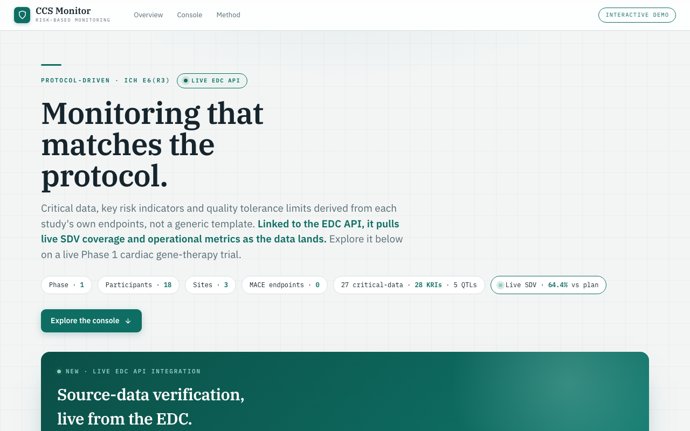

Clinical Monitoring
Risk-based monitoring views over trial conduct, data quality, and site performance for the HF-1002 study.
Launch live demo
Runs in your browser
What it does
Surfaces the signals a monitor needs - enrollment, query burden, protocol deviations, and site KPIs - in one clinical brief.
How it works
- Aggregates trial-conduct metrics into monitor-facing views.
- Highlights risk indicators and site outliers.
- Presents a concise, on-brand clinical monitoring brief.
MonitoringRisk-based
Dashboard

Static preview - click to open the live, interactive demo